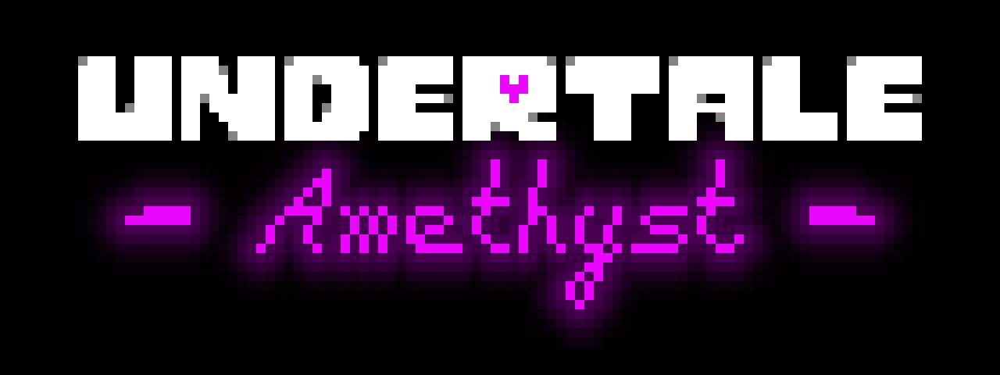

The Undertale Amethyst Logo (and sizes)
These are some of the sizes for the Undertale Amethyst logo (some images scaled to fit the page):
1x Scale (102 x 38)
12x Scale but resized canvas to fit the width of 1280 (1280 x 480)

10x scale (Square) (1080 x 1080)